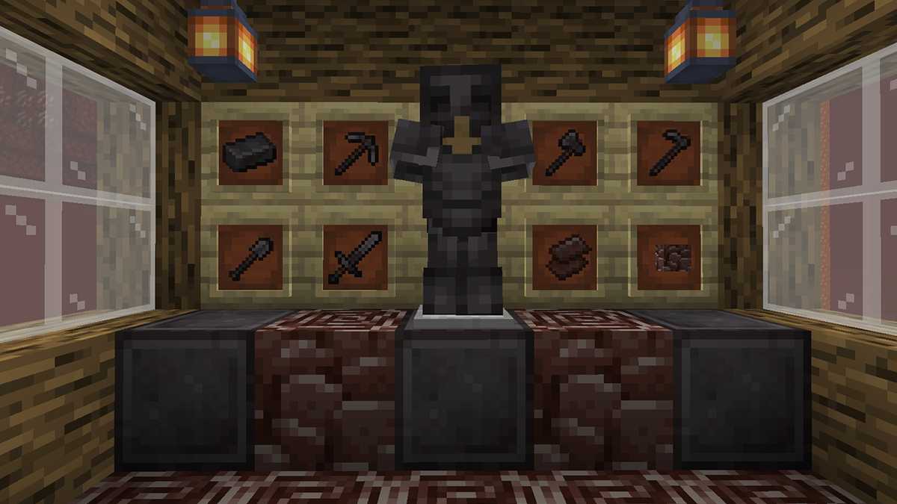

A Nether Update ou Atualização do Nether é uma grande atualização cuja temática reformulou o Nether. Ela adicionou novas características interessantes para essa dimensão, como novos biomas e criaturas. A atualização foi anunciada na MINECON Live 2019. Esta atualização foi lançada no dia 23 de junho de 2020 nas Edições Java e Bedrock como as versões 1.16 e 1.16.0, respectivamente.
O desenvolvimento desta atualização na Edição Java foi iniciada com a snapshot 20w06a, lançada em 5 de fevereiro de 2020. A primeira pre-release foi lançada em 4 de junho de 2020.
Segue abaixo uma imagem dos itens feitos com os novos minerios da 1.16,sendo ele superior ao diamante e muito dificil de se encontrar no nether. 